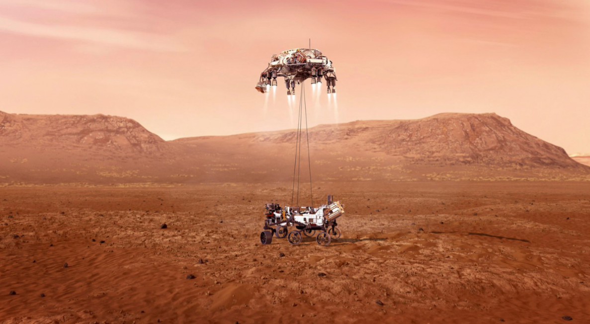
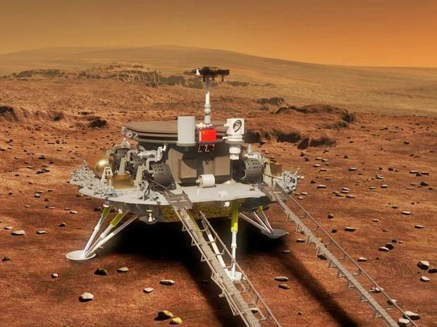
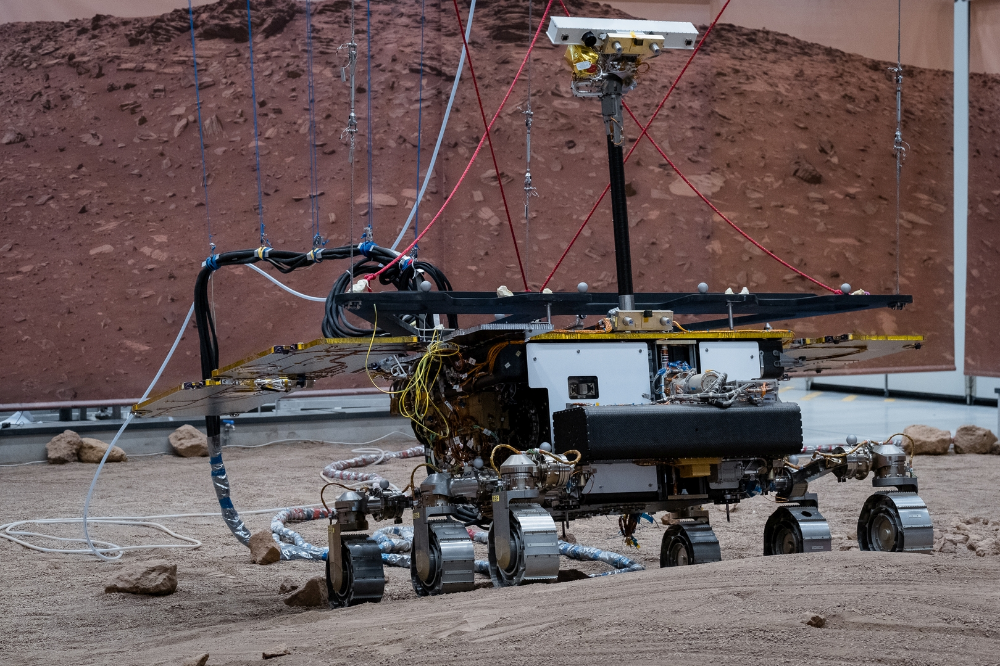

Mars jest od dawna obiektem zainteresowania naukowców i badaczy. W ostatnich latach nastąpił znaczny postęp w badaniach Marsa, dzięki czemu naukowcy odkryli nowe informacje o historii, geologii i potencjale dla życia na Czerwonej Planecie.
Oto niektóre z najnowszych odkryć i misji badawczych na Marsie:
NASA Mars 2020: Ta misja wystrzeliła w 2020 roku i wylądowała na Marsie w lutym 2021 roku. Misja wysłała na powierzchnię łazik Perseverance, który przeprowadził badania geologiczne i środowiskowe Marsa. Łazik Perseverance odkrył dowody na to, że Mars kiedyś był znacznie bardziej wilgotny i przyjazny dla życia.

Łazik Perseverance na Marsie
Chińska misja Tianwen-1: Ta misja wystrzeliła w 2020 roku i osiągnęła orbitę Marsa w lutym 2021 roku. Misja wysłała na powierzchnię łazik Zhurong, który przeprowadził badania geologiczne i środowiskowe Marsa. Łazik Zhurong odkrył dowody na to, że Mars kiedyś miał aktywne wulkany i rzeki.

Łazik Zhurong na Marsie
Europejska misja ExoMars Rover: Ta misja wystrzeliła w 2022 roku i ma wylądować na Marsie w 2023 roku. Misja wysłała na powierzchnię łazik Rosalind Franklin, który przeprowadzi badania geologiczne i środowiskowe Marsa. Łazik Rosalind Franklin będzie szukał dowodów na życie na Marsie.

Łazik Perseverance na Marsie
Te odkrycia i misje badawcze są kamieniami milowymi w badaniach Marsa. Pomagają one naukowcom lepiej zrozumieć historię i geologię Marsa, a także potencjał dla życia na Czerwonej Planecie.
W nadchodzących latach planowane są dalsze misje badawcze Marsa. W 2024 roku NASA planuje wysłać na Marsa łazik o nazwie Mars Sample Return, który zabierze próbki skał i gleby z powierzchni Marsa na Ziemię do dalszych badań.
Te misje pomogą naukowcom lepiej zrozumieć Marsa i odpowiedzieć na pytanie, czy kiedykolwiek istniało życie na Czerwonej Planecie.